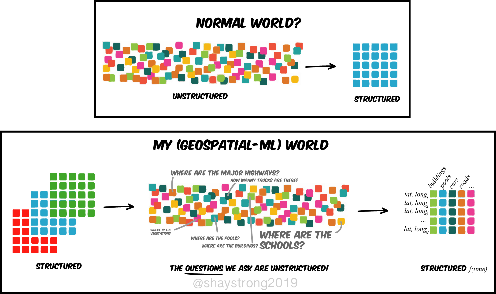
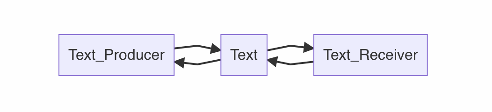
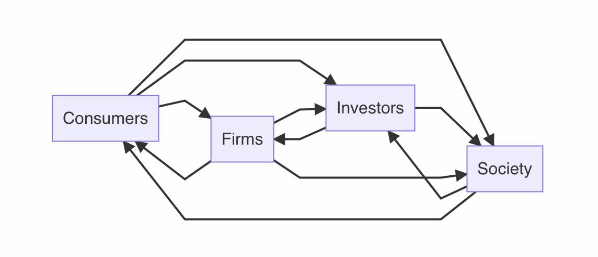

第一届中国研究生金融科技创新大赛讲座
2022/06/24 13:43
录制文件：https://dwz.win/ayS8
另类数据与投资算法
信息通信技术的创新、互联网和移动终端的普及，产生了了大量的区别于 传统财务数据的新型数据，这类非财务数据具有数据量大、实时性高、颗粒度细及“原始”等特点，影响着资本市场，在投资领域的应用受到了越来越多的关注。投资者可以用较低的成本获取大量的数据和信息，对这类信息进行筛选、分析，辅助制定投资决策。
能否选择一种尚未在资本市场广泛使用的另类数据，利用合适的算法把该数据应用于 A 股市场投资当中，并寻找合适的算法解决方案，研究其在投资中的价值，并构建出可行性的投资方案？

另类数据alternative data
大数据思维， 快、多、大、异。
另类大数据产生的更多更快，与传统指标相关性小，能提供更多的信息增益。
另类数据alternative data主要包含以下三种:
| 另类数据 | 包括 | 结构化 | 类型 | python技术 |
|---|---|---|---|---|
| 个人产生的数据 | 社交媒体帖子、产品评论、互联网搜索趋势等 | 非结构 | 网页 | 爬虫 |
| 由业务流程产生的数据 | 公司工商数据、专利数据、尾气数据、招聘数据、商业交易、事件数据、招标数据、阿里巴巴、京东、美团等电商平台数据、app排行榜、直播和搜索指数数据等 | 结构化 | 数字 | 爬虫 |
| 传感器产生的数据 | 卫星图像数据、行人和车辆流量、船舶位置等，地图数据。 | 非结构 | 图像 | 图片分析 |
| 第三方数据 | 分析师研报情感数据、一致性预期。 | 结构 | 数字 | 付费 |
国内提供另类数据的开源网站有:
文本
文化研究之父斯图亚特·霍尔（Stuart Hall）在《电视话语中的编码和解码》（Encoding and decoding inthe television discourse）一文中提出了“编码解码”理论。
- 编码（encoding），信息传播者将所传递的讯息、意图或观点，转化为具有特定规则的代码。
- 解码（decoding），信息接受者，将上述代码按特定规则进行解读。
信息传播学的编码解码理论
 
| 角度 | 解释 | 难度 | python库 |
|---|---|---|---|
| 信息检索 | 新闻咨询中是否出现某类信息(某类词) | 低 | re、jieba |
| 情感分析 | 文本中正面词与负面词含量的对比 | 低 | jieba、nltk |
| 文本相似度 | 两文本向量化后的cosine余弦值的 | 中 | jieba、scikit-learn |
| 文本分类 | 标注数据，使用文本数据做类别预测(利好、利空) | 中 | scikit-learn |
| 词向量 | - 不同主体对同一概念的认知(偏见、刻板印象)等。 - 同一主体对不同概念的认知。 |
高 | gensim |
文本相似度提前预警股价暴跌。
Cohen, Lauren, Christopher Malloy, and Quoc Nguyen. “Lazy prices.” The Journal of Finance 75, no. 3 (2020): 1371-1415.


图片
OCR图像识别，识别有没有、有多少。
- 停车场汽车停放量，识别有多少量车，预测沃尔玛等商超的经营情况

音频、视频
- 演讲音频转文本，用到文本分析，度量讲话的语气语调。
金融资讯舆情分析
新闻舆情作为金融投资市场上的重要信息可以及时披露上市公司的经营状 况或股价异动情况，常常可作为投资决策的重要参考，但市场中海量的舆情信息难以通过人工的方式逐一分析，往往只能主观挑选某些个人认为比较重要的 新闻媒体进行舆情的跟踪，并忽略和抛弃其他新闻媒体的舆情信息，这极有可能遗漏掉一部分有价值的重要信息。
请各参赛队伍根据赛方提供的上市公司新闻资讯数据，利用深度学习、自然语言处理算法进行建模分析，及时、准确地判断新闻资讯的 舆情倾向（利好、中性、利空等）
新闻中的可以挖掘的金融指标
-
分析师情绪 买在分歧，卖在一致。
-
新闻情绪 机构、媒体、散户。
测度算法
使用文本分析对咨询中的舆情倾向（利好、中性、利空等）进行分析。
| 算法 | 功能 | 类比 | |
|---|---|---|---|
| 词典法 | 把文档转为某个数。 例如政府工作报告中提到"创新"、“创业"的个数。 |
原子 | |
| 机器学习 | 把 文档 转为 vector | 分子 | |
| 词嵌入 | 比机器学习更深入彻底，将word看做vector。工程师，含有男性、技术、高薪。。。 |
夸克 | |

需要的技术
-
词典法-构造金融情感词典
-
共现法，上下文共同出现。
-
词向量法
-
-
ML做文本分类
构造金融词典
共现法
物以类聚，词以群分。近义词更容易出现在同一个上下文中。
以「利好」「利空」为例
- 人工选定「利好」「利空」初始词
- 构建语料内的词语共现矩阵
- 得到与「利好」「利空」共现得分较高的前n个候选词
- 分别输出到txt内
- 人工筛查剔除
词向量

以「利好」「利空」为例
- 人工选定「利好」「利空」初始词
- 训练语料内的词向量模型
- 得到与「利好」「利空」向量相似度较高的前n个候选词
- 分别输出到txt内
- 人工筛选剔除
ML做预测(利好1、利空0)步骤
- …(标注数据)
- 导入数据
- 数据清洗(剔除停用词，杂乱字符等)
- 特征工程（文本转化为向量）
- 将数据分为训练集和测试集
- 选择某种ML算法训练模型
- 评价模型
ML算法
机器学习算法分为 监督式 和 非监督式。本节特指监督式，即同时含有x1, x2,…xn和y.
ML训练出的模型，实际上是通过数据，学习 y=f(x1, x2, …xn)中的 f。

| 监督学习算法 | 代码导入方法 |
|---|---|
| 回归 | from sklearn.linear_model import LinearRegression from sklearn.linear_model import LogisticRegression … |
| K近邻 | from sklearn.neighbors import KNeighborsClassifier … |
| 支持向量机 | from sklearn.svm import SVC … |
| 决策树 | from sklearn.tree import DecisionTreeClassifier … |
投保反欺诈模型
机器学习可以根据丰富的数据和监控模型，对数据进行多重处理分析，建立实时反欺诈规则和模型，结合当前用户特征，实时识别用户欺诈行为。
请参赛队伍在了解投保信息收集的基础上，基于机器学习技术，对投保过程中的信息进行收集和分析，从数据中提取客户多维度异常模式，探索大数据反欺诈规则，实现异常识别功能，提前检测投保人在交易过程中是否有欺诈行为，识别可能的欺诈行为，减少欺诈损害。
了解投保信息收集的基础上–>提取新的x
ML做预测步骤
- …(标注数据)
- 导入数据
- 数据清洗(剔除停用词，杂乱字符等)
- 特征工程（构造并加入新的x）
- 将数据分为训练集和测试集
- 选择某种ML算法训练模型
- 评价模型
| 监督学习算法 | 代码导入方法 |
|---|---|
| 回归 | from sklearn.linear_model import LinearRegression from sklearn.linear_model import LogisticRegression … |
| K近邻 | from sklearn.neighbors import KNeighborsClassifier … |
| 支持向量机 | from sklearn.svm import SVC … |
| 决策树 | from sklearn.tree import DecisionTreeClassifier … |
Kaggle代码
公募产品个性化推荐系统
在客户需求升级和金融市场的竞争环境下，数字化运营将是未来金融机构核心竞争力的来源，是构筑差异化优势的重要手段。
请参赛队伍结合金融行业的数字化运营需求，根据赛方提供的公募基金资讯数据、风险等级数据、用户行为点击序列、公募产品详情页的停留时长、公募产品的自选收藏等行为数据集，运用机器学习、深度学习、推荐算法等科技手段，分析预测用户的下一个兴趣点，在满足风险合规的条件下为合适的用户找到合适的产品。
方法论基础
假设: 相似的人 喜欢做 相似的事情
有三种推荐算法
| 推荐系统算法思想 | 解释 | 特征向量化 |
|---|---|---|
| Demographic Filtering | 相似人口特征的人 喜欢 相似的事(物) | 将人向量化。[age、gendre、salary、consume、地理、、、] |
| Content Based Filtering | 如果一个人喜欢某个特定事(物)，他或她也会喜欢与它相似的项目。 | 将事物向量化 |
| Collaborative Filtering 协同(联合) | 人与事(物) 的 配对匹配 存在模式 | 用户-评价-矩阵 |
Collaborative Filtering | user-item-matrix
以用户影评为例，挖掘构造出用户、产品的特点(特征向量）。


冷启动问题
如果某个用户，没有任何影评数据，如何预测该用户的偏好？
思路: 依然假设物以类聚，人以群分。
公募基金公司 有历史记录
| user | 类型 | 个人风险偏好考试 | 金额 |
|---|---|---|---|
| User1 (age/gender/edu/addr/intro) | 债券 | 保守 | 5000 |
| User2 (age/gender/edu/addr/intro) | 股票 | 激进 | 10000 |
| … | .. | .. | .. |
本文之外
长期征稿

招募小伙伴

文本分析视频课
想轻松而快捷的深刻了解一个领域，看视频(直播)学习是一个不错的方式。
-
大邓每年会有4场直播，五一、十一、寒、暑假，如果时间点接近，可考虑报名参与直播课。
-
如果只意性价比，且已迫不及待想学，可以考虑直接报名大邓的录播课。
-
如果不想学，也可以考虑外包。更建议找淘宝，如果找我咨询，请先阅读有偿说明